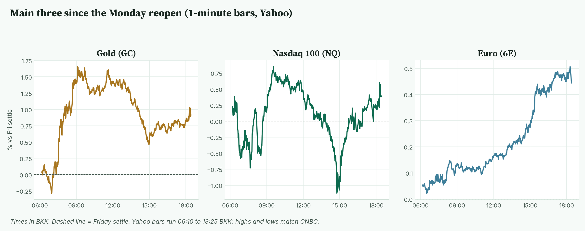
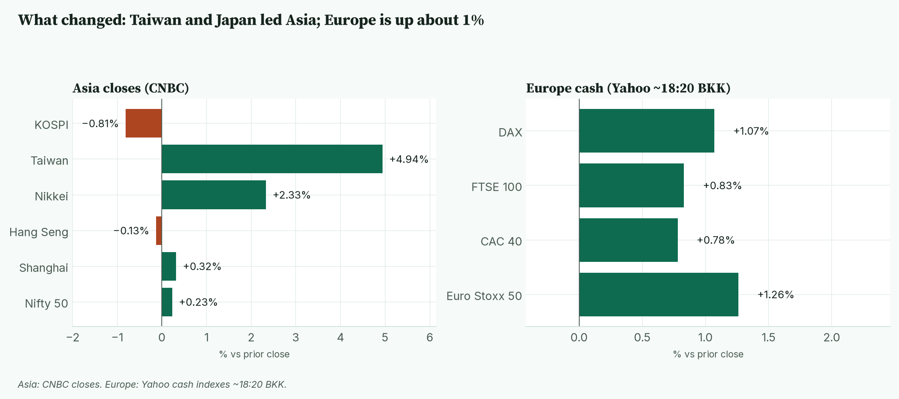
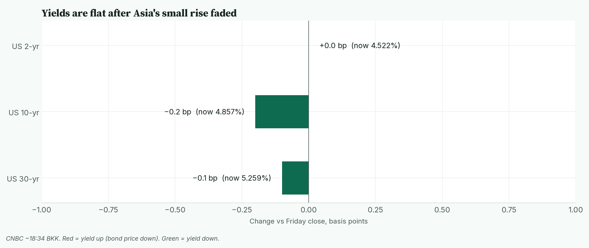
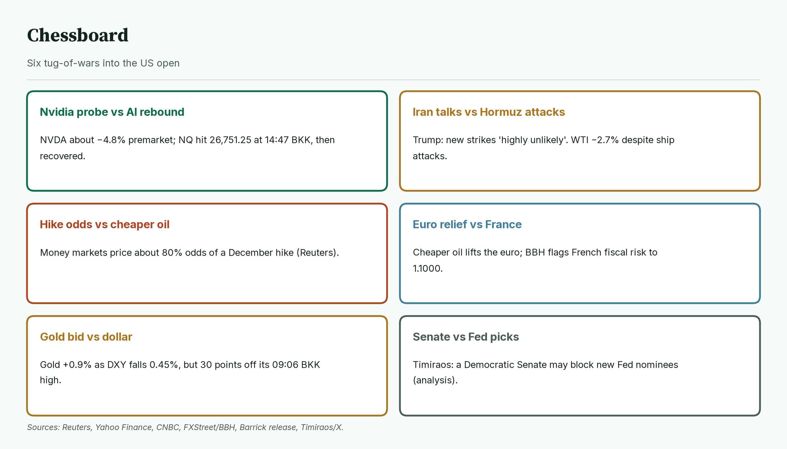
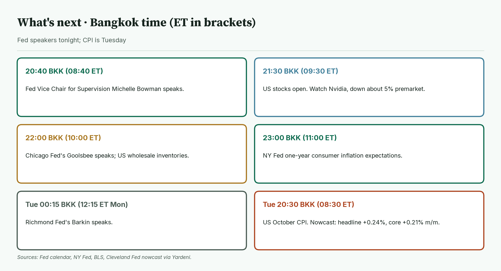
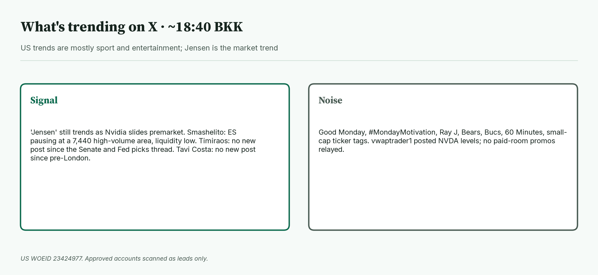

April · Market Intel, pre-NY · Mon Nov 9, 2026 · ~18:50 BKK / ~06:50 New York
Headline: Oil slid again, the dollar fell and the euro hit a session high. Gold futures hold +0.91% at 4,111.8. Nasdaq futures are +0.39% at 27,191.50 after a fresh low at 14:47 BKK, while Nvidia is down about 5% premarket. Fed speakers tonight and US CPI on Tuesday at 20:30 BKK are the deciders.
So what: Bowman speaks at 20:40 BKK, US stocks open at 21:30 BKK, Goolsbee speaks at 22:00 BKK and the NY Fed inflation-expectations survey lands at 23:00 BKK.
 Caption: Futures at 18:25 BKK and indicators at about 18:35 BKK, versus Friday's settle or close. The euro and gold lead; oil is the big loser.
Caption: Futures at 18:25 BKK and indicators at about 18:35 BKK, versus Friday's settle or close. The euro and gold lead; oil is the big loser.
1) Main instruments The three main contracts since the Monday reopen, as a % move from Friday's settle. Gold peaked at 09:06 BKK and faded. Nasdaq dipped below zero into 14:47 BKK, then recovered. The euro climbed all day. |
 Caption: The three main contracts since the Monday reopen, as a % move from Friday's settle. Gold peaked at 09:06 BKK and faded. Nasdaq dipped below zero into 14:47 BKK, then recovered. The euro climbed all day.
(Futures trade nearly around the clock, so they show the mood before stocks open. Quotes are CNBC at 18:25 BKK (06:25 New York) and match the Yahoo feed within a tick. The CME reopen was 06:00 BKK (18:00 New York Sunday). Yahoo's 1-minute bars start at 06:10 BKK; highs and lows below match CNBC's full-session figures unless labelled.)
Caption: The three main contracts since the Monday reopen, as a % move from Friday's settle. Gold peaked at 09:06 BKK and faded. Nasdaq dipped below zero into 14:47 BKK, then recovered. The euro climbed all day.
(Futures trade nearly around the clock, so they show the mood before stocks open. Quotes are CNBC at 18:25 BKK (06:25 New York) and match the Yahoo feed within a tick. The CME reopen was 06:00 BKK (18:00 New York Sunday). Yahoo's 1-minute bars start at 06:10 BKK; highs and lows below match CNBC's full-session figures unless labelled.)
- Gold futures (GC, Dec): 4,111.8, +0.91%, at 18:25 BKK. Driver: a weaker dollar keeps buyers in, but gold has given back about 31 points from its high. Friday's settle was 4,074.9. Today's range is 4,062.5 (06:58 BKK) to 4,143.3 (09:06 BKK). Spot gold is 4,106.88, +1.01% (CNBC, ~18:35 BKK).
- Nasdaq 100 futures (NQ, Dec): 27,191.50, +0.39%, at 18:25 BKK. Driver: Nvidia's board is investigating whether CEO Jensen Huang was targeted by a foreign intelligence effort, and Huang admitted an affair in a staff memo (Reuters, FT via Yahoo Finance). NQ made a new session low of 26,751.25 at 14:47 BKK, below the pre-London low, then rebounded. Friday's settle was 27,085.25. The high is 27,319.00 (09:33 BKK).
- Euro futures (6E, Dec): 1.1206, +0.44%, at 18:24 BKK. Driver: cheaper oil eases Europe's energy bill and the dollar is giving back Friday's jobs-day jump (FXStreet, BBH). Friday's settle was 1.11565. Today's range is 1.11585 (06:31 BKK) to 1.12140 (18:18 BKK). Spot euro is 1.1192 (CNBC, ~18:35 BKK).
- Takeaway: gold and the euro are riding a softer dollar. Nasdaq futures are green, but Nvidia is a live weight into the open.
Context. The dollar index (DXY, the dollar against six major currencies) is 101.834, −0.45% (CNBC, ~18:35 BKK). The 10-year US yield (what the US government pays to borrow for 10 years) is 4.857%, down 0.2 basis points (CNBC, ~18:34 BKK; a basis point is 0.01 percentage point). The VIX (the "fear gauge" built from S&P 500 option prices) is 23.29, −9.17% in extended trading versus Friday's 25.64 close (CNBC, ~18:35 BKK). US oil (CL, December) is 88.37, −2.71% (18:25 BKK). S&P 500 futures (ES) are 7,447.75, +0.62% (18:25 BKK). Bitcoin is $74,591, −1.50% versus CNBC's previous close (CNBC/Coin Metrics, ~18:35 BKK).
2) What changed since pre-London Taiwan and Japan closed strongly higher, while Korea faded into the red. Europe's main indexes are up about 1%. |
 Caption: Taiwan and Japan closed strongly higher, while Korea faded into the red. Europe's main indexes are up about 1%.
Caption: Taiwan and Japan closed strongly higher, while Korea faded into the red. Europe's main indexes are up about 1%.
- Nasdaq had a second wobble. NQ fell to 26,751.25 at 14:47 BKK, then climbed back above Friday's settle (CNBC, Yahoo).
- Oil kept sliding. WTI fell from 90.47 at pre-London to 88.37. Its low was 87.54 at 18:21 BKK.
- The dollar turned clearly lower. DXY went from 102.11 to 101.834.
- Asia closes: Taiwan +4.94%, Nikkei +2.33%, Shanghai +0.32%, Hang Seng −0.13%, Kospi −0.81% (CNBC).
- Europe at ~18:20 BKK: Euro Stoxx 50 +1.26%, DAX +1.07%, FTSE 100 +0.83%, CAC 40 +0.78% (Yahoo).
- Takeaway: the morning's calm held in Europe, but Nasdaq's dip shows how thin the AI rebound still is.
3) Rates, FX and oil Treasury yields are flat. Asia's small rise has faded. |
 Caption: Treasury yields are flat. Asia's small rise has faded.
Caption: Treasury yields are flat. Asia's small rise has faded.
- Now (CNBC ~18:34 BKK): 2-year 4.522% (unchanged), 10-year 4.857% (−0.2 bp), 30-year 5.259% (−0.1 bp).
- Fed odds. Money markets price about 80% odds of a December quarter-point hike after Friday's 165,000 payrolls beat (Reuters).
- Mentor: oil is an input to inflation. When oil falls, traders worry a little less that the Fed must keep hiking.
- Yen. USD/JPY is 157.90, −0.35% (CNBC, ~18:35 BKK).
- Oil. January Brent is 95.30, −3.07% (CNBC, ~18:25 BKK), in a 94.41 to 98.43 range. Trump said fresh strikes on Iran were "highly unlikely" if talks progress, even as both sides reported ships hit near the Strait of Hormuz (Reuters via CNBC). JPMorgan estimates a 1.4 million barrel a day surplus in October (via CNBC).
- Takeaway: oil is doing the Fed's work today. Yields have not moved yet; CPI will decide that.
4) Premarket earnings and movers
- Barrick (B) beat. Adjusted EPS $0.82 versus the $0.74 Zacks average; revenue $5.07B; gold output 816,000 oz (Barrick release, AP).
- Still due: KKR at about 18:50 BKK (06:50 ET) and Constellation Energy at about 19:00 BKK (07:00 ET) (Benzinga). Occidental, Rocket Lab and Take-Two report after the close.
- Movers (Yahoo, ~18:35 BKK): Nvidia 177.75, −4.76%. Amazon +3.05%, Alphabet +1.84%, Meta +1.74%, Microsoft +1.42%. Coinbase −2.06%, Strategy (MSTR) −3.61%.
- Takeaway: big tech outside Nvidia is bid, which is why Nasdaq futures are green.
5) Why it matters
Nvidia is the single biggest weight in the AI trade. A leadership question there tests whether last week's sell-off is done.
- China's foreign ministry called the spy allegation "unsubstantiated" (Bloomberg via Yahoo Finance).
- Nvidia reports earnings on Nov 17, so questions about Huang will dominate that call (Yahoo Finance).
- Mentor: when one giant stock falls but the index rises, money is rotating, not fleeing. That is healthier than a broad sell-off, but it can flip fast.
- Takeaway: watch whether Nvidia's premarket loss widens after 21:30 BKK. That decides if Nasdaq holds 27,085.25.
6) Chessboard Six tug-of-wars into the US open. Nvidia and oil are moving the most. |
 Caption: Six tug-of-wars into the US open. Nvidia and oil are moving the most.
Caption: Six tug-of-wars into the US open. Nvidia and oil are moving the most.
- Nvidia probe vs AI rebound. NVDA about −4.8% premarket; NQ still green.
- Iran talks vs Hormuz attacks. Trump is expected to meet Qatar's prime minister today on a ceasefire and nuclear talks (FXStreet).
- Hike odds vs cheaper oil. About 80% December hike odds (Reuters).
- Euro relief vs France. BBH says French fiscal trouble could still push EUR/USD to 1.1000 (via FXStreet).
- Gold bid vs dollar. Gold +0.91% as DXY falls 0.45%.
- Senate vs Fed picks. Nick Timiraos argues a Democratic Senate may not confirm new Fed nominees (X, analysis).
- Takeaway: the fastest risk is more Nvidia headlines. The slow risk is CPI cementing a December hike.
7) Scenarios and levels
- Calm open, Nvidia steadies: Nasdaq retests 27,319.00. Gold stays above 4,100. The euro holds above 1.1200.
- Nvidia slide spreads: Nasdaq loses 27,085.25 and revisits 26,751.25. Gold may catch a safety bid toward 4,143.3.
- Hawkish Fed speakers: yields rise, the dollar bounces, the euro slips back toward 1.11585 and gold fades toward 4,062.5.
- These are possible paths, not forecasts.
8) Leading indicators (BKK times) Three Fed speakers and inflation expectations tonight. CPI lands Tuesday. |
 Caption: Three Fed speakers and inflation expectations tonight. CPI lands Tuesday.
Caption: Three Fed speakers and inflation expectations tonight. CPI lands Tuesday.
- 20:40: Fed Vice Chair for Supervision Michelle Bowman speaks (08:40 ET).
- 21:30: US stocks open (09:30 ET).
- 22:00: Chicago Fed's Austan Goolsbee speaks; US wholesale inventories (10:00 ET).
- 23:00: NY Fed one-year consumer inflation expectations (11:00 ET).
- Tue 00:15: Richmond Fed's Tom Barkin speaks (12:15 ET Monday).
- Tue 20:30: US October CPI (08:30 ET). The Cleveland Fed nowcast sees headline +0.24% and core +0.21% on the month (via Yardeni). US bond markets close Wednesday for Veterans Day.
- Levels to watch: GC 4,062.5 and 4,143.3. NQ 26,751.25 and 27,319.00. 6E 1.11585 and 1.12140. 10-year 4.886% (today's CNBC high). WTI 87.54.
- Takeaway: Bowman at 20:40 BKK and the US open at 21:30 BKK decide tonight. CPI at 20:30 BKK Tuesday decides the week.
9) Undercovered
- Physical oil is tighter than futures. Murban crude rose 3.42% to $99.17 early Monday while futures fell (Gulf News, citing Oilprice.com).
- Hormuz traffic is still a trickle. IMF PortWatch logged one transit on Nov 1 versus a pre-crisis 85 a day (via Gulf News).
- ECB succession. Klaas Knot and Pablo Hernández de Cos are seen as the front-runners to replace Lagarde (FX.co, BBH).
- German trade surplus shrank to €15.6B in September versus €19.2B expected (Destatis via FXStreet).
10) What's trending on X (~18:40 BKK) US trends are mostly sport and entertainment. "Jensen" is the only market trend. |
 Caption: US trends are mostly sport and entertainment. "Jensen" is the only market trend.
Caption: US trends are mostly sport and entertainment. "Jensen" is the only market trend.
- US: Good Monday, Ray J, Caleb, Bears, Jensen, 60 Minutes.
- Signal: "Jensen" still trends as Nvidia slides premarket.
- Signal / levels: Smashelito notes ES pausing at a 7,440 high-volume area after Friday's inside day; later he flagged low liquidity. Order-flow levels, not news.
- Signal / analysis: Nick Timiraos has no new post since his Senate and Fed-picks thread. Tavi Costa has no new post since pre-London.
- Noise: Monday greetings, NFL, celebrity tags, small-cap ticker tags. vwaptrader1 posted Nvidia levels; no paid-room promos relayed.
Bottom line: a softer dollar and cheaper oil are carrying gold and the euro, while Nvidia is the drag on Nasdaq. For Jim: gold at 4,111.8 sits between 4,062.5 and 4,143.3. Nasdaq at 27,191.50 needs to hold Friday's 27,085.25 settle; 27,319.00 is the ceiling and 26,751.25 the floor. The euro at 1.1206 is near its 1.12140 high; 1.11585 is the floor. Interpretive note: hawkish Fed speakers could cap gold and Nasdaq before CPI. That is a possible path, not a forecast.
Confidence: Futures levels: high (CNBC, matched to Yahoo). ES full-session low of 7,363.75 from CNBC, because Yahoo's bars start at 06:10 BKK. Yields, DXY, spot euro, Brent, yen, Bitcoin, VIX: CNBC, time-stamped. Fed odds: Reuters money-market pricing, not read directly from CME. Premarket movers: Yahoo, about 18:35 BKK. Barrick: company release and AP. Earnings times: Benzinga. Calendar: carried from the verified pre-London brief (Fed calendar, NY Fed, BLS). Timiraos, Smashelito and Tavi Costa: X leads only. Amazon's premarket gain has no confirmed driver, so none is given.
Charts: /workspace/april-charts/2026-11-09/pre-ny-{scoreboard,main3,asia,rates,leading,chess,xsplit}.png |